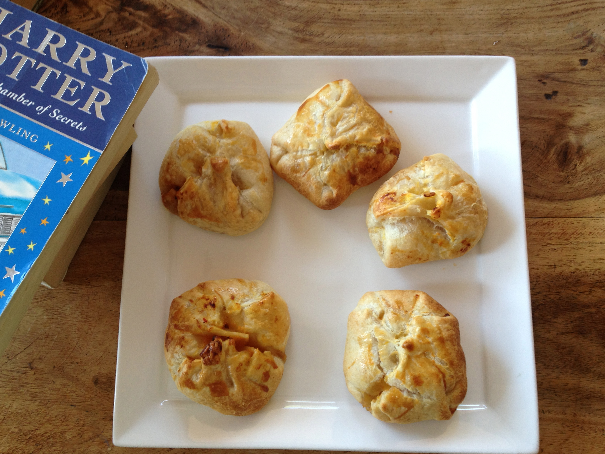

Pumpkin Pasties

Image credit:
Harry Potter Food - Pumpkin Pasties IMG_0061 by
Nicole,
CC BY-NC 2.0
Description
Pumpkin Pasties are one of the first magical foods Harry tasted aboard the Hogwarts Express.
These hand-sized pastries are filled with spiced pumpkin and wrapped in a flaky crust, making them the wizarding world’s answer to portable pumpkin pie.
They’re sweet, comforting, and ideal for autumn days.
Ingredients
- 1 cup pumpkin purée
- ¼ cup brown sugar
- 1 tsp ground cinnamon
- ½ tsp ground nutmeg
- ½ tsp ground ginger
- Pinch of salt
- 1 package pie crust (pre-made or homemade)
- 1 egg (for egg wash)
Steps
- Preheat oven to 375°F (190°C).
- Combine pumpkin purée, sugar, and spices in a bowl.
- Roll out pie crust and cut into 4–5 inch circles.
- Place a spoonful of filling on half of each circle.
- Fold over, press edges with a fork, and place on a baking sheet.
- Brush tops with beaten egg.
- Bake 20–25 minutes, until golden brown.
- Cool slightly and serve warm.
Home